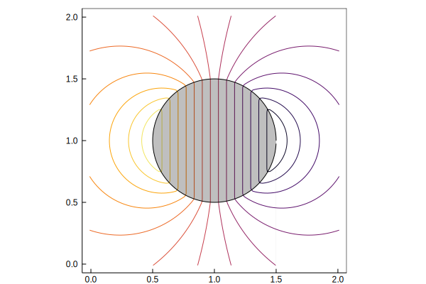

Saddle point systems
Saddle systems comprise an important part of solving mechanics problems with constraints. In such problems, there is an underlying system to solve, and the addition of constraints requires that the system is subjected to additional forces (constraint forces, or Lagrange multipliers) that enforce these constraints in the system. Examples of such constrained systems are the divergence-free velocity constraint in incompressible flow (for which pressure is the associated Lagrange multiplier field), the no-slip and/or no-flow-through condition in general fluid systems adjacent to impenetrable bodies, and joint constraints in rigid-body mechanics.
A general saddle-point system has the form
We are primarily interested in cases when the operator $A$ is symmetric and positive definite, which is fairly typical. It is also fairly common for $B_1 = B_2$, so that the whole system is symmetric.
ViscousFlow allows us to solve such systems for $u$ and $f$ in a fairly easy way. We need only to provide rules for how to evaluate the actions of the various operators in the system. Let us use an example to show how this can be done.
Translating cylinder in potential flow
In irrotational, incompressible flow, the streamfunction $\psi$ satisfies Laplace's equation,
On the surface of an impenetrable body, the streamfunction must obey the constraint
where $\psi_b$ is the streamfunction associated with the body's motion. Let us suppose the body is moving vertically with velocity 1. Then $\psi_b = -x$ for all points inside or on the surface of the body. Thus, the streamfunction field outside this body is governed by Laplace's equation subject to the constraint.
Let us solve this problem on a staggered grid, using the tools discussed in the Fields section, including the regularization and interpolation methods to immerse the body shape on the grid. Then our saddle-point system has the form
where $L$ is the discrete Laplacian, $H$ is the regularization operator, and $E$ is the interpolation operator.
Physically, $f$ isn't really a force here, but rather, represents the strengths of distributed singularities on the surface. In fact, this strength represents the jump in normal derivative of $\psi$ across the surface. Since this normal derivative is equivalent to the tangential velocity, $f$ is the strength of the bound vortex sheet on the surface. This will be useful to know when we check the value of $f$ obtained in our solution.
First, let us set up the body, centered at $(1,1)$ and of radius $1/2$. We will also initialize a data structure for the force:
julia> n = 128; θ = range(0,stop=2π,length=n+1);
julia> xb = 1.0 .+ 0.5*cos.(θ[1:n]); yb = 1.0 .+ 0.5*sin.(θ[1:n]);
julia> X = VectorData(xb,yb);
julia> f = ScalarData(X);Now let's set up a grid of size $102\times 102$ (including the usual layer of ghost cells) and physical dimensions $2\times 2$.
julia> nx = 102; ny = 102; Lx = 2.0; dx = Lx/(nx-2);
julia> w = Nodes(Dual,(nx,ny));We need to set up the operators now. First, the Laplacian:
julia> L = plan_laplacian(size(w),with_inverse=true)
Discrete Laplacian (and inverse) on a (nx = 102, ny = 102) grid with spacing 1.0
julia> L⁻¹(w::T) where {T} = L\w
L⁻¹ (generic function with 1 method)The last line just defines another operator for computing the inverse of $L$. We have called it L⁻¹ for useful shorthand. This operator acts upon dual nodal data and returns data of the same type, e.g. ψ = L⁻¹(w). The saddle point system structure requires operators that have this sort of form.
Now we need to set up the regularization H and interpolation E operators.
julia> regop = Regularize(X,dx;issymmetric=true)
Symmetric regularization/interpolation operator with non-filtered interpolation
128 points in grid with cell area 0.0004
julia> Hmat, Emat = RegularizationMatrix(regop,f,w);Now we are ready to set up the system.
julia> S = SaddleSystem((w,f),(L⁻¹,Hmat,Emat),issymmetric=true,isposdef=true)
Saddle system with 128 constraints and
State of type Nodes{Dual,102,102}
Force of type ScalarData{128}Note that we have provided a tuple of the types of data, w and f, that we want the solver to work with, along with a tuple of the definitions of the three operators. The operators can be in the form of a function acting on its data (as for L⁻¹) or in the form of a matrix (or matrix-like) operator (as for Hmat and Emat); the constructor sorts it out. However, the order is important: we must supply $A^{-1}$, $B_1^T$, and $B_2$, in that order.
We have also set two optional flags, to specify that the system is symmetric and positive definite. This instructs on which solver to use. (This is actually not quite true for the Laplacian: it is only positive semi-definite, since this operator has a null space. It is adequate criteria for using the conjugate gradient method, but we will have to be careful of some aspects of the solution, we we will see below.)
Let's solve the system. We need to supply the right-hand side.
julia> w = Nodes(Dual,(nx,ny));
julia> ψb = ScalarData(X);
julia> ψb .= -(xb.-1);The right-hand side of the Laplace equation is zero. The right-hand side of the constraint is the specified streamfunction on the body. Note that we have subtracted the circle center from the $x$ positions on the body. The reason for this will be discussed in a moment.
We solve the system with the convenient shorthand of the backslash:
julia> @time ψ,f = S\(w,ψb)
0.020771 seconds (136 allocations: 754.734 KiB)
(Dual nodes in a (nx = 102, ny = 102) cell grid
Number of Dual nodes: (nx = 102, ny = 102), [-0.0501936, -0.0501331, -0.0499519, -0.0496503, -0.0492291, -0.0486893, -0.0480323, -0.0472595, -0.0463728, -0.0453745 … -0.0442668, -0.0453745, -0.0463728, -0.0472595, -0.0480323, -0.0486893, -0.0492291, -0.0496503, -0.0499519, -0.0501331])Just to point out how fast it can be, we have also timed it. It's pretty fast.
Now, let's plot the solution in physical space. We'll plot the body shape for reference, also.
julia> xg, yg = coordinates(ψ,dx=dx)
(-0.01:0.02:2.0100000000000002, -0.01:0.02:2.0100000000000002)
julia> plot(xg,yg,ψ)
Plot{Plots.PyPlotBackend() n=1}
julia> plot!(xb,yb,fillcolor=:black,fillrange=0,fillalpha=0.25,linecolor=:black)
Plot{Plots.PyPlotBackend() n=2}
The solution shows the streamlines for a circle in vertical motion, as expected. All of the streamlines inside the circle are vertical.
Methods
SaddleSystem((u,f),(A⁻¹,B₁ᵀ,B₂);[tol=1e-3],[issymmetric=false],[isposdef=false],[conditioner=Identity],[store=false])Construct the computational operators for a saddle-point system of the form $[A B₁ᵀ; B₂ 0][u;f]$. Note that the constituent operators are passed in as a tuple in the order seen here. Each of these operators could act on its corresponding data type in a function-like way, e.g. A⁻¹(u), or in a matrix-like way, e.g., A⁻¹*u.
The optional argument tol sets the tolerance for iterative solution (if applicable). Its default is 1e-3.
The optional argument conditioner can be used to supply a function that acts upon the result f to 'condition' it (e.g. filter it). It is, by default, set to the identity.
The optional Boolean argument store will compute and store the Schur complement matrix's factorization. This makes the inversion faster, though it comes at the expense of memory and overhead time for pre-computing it. The resulting solution is somewhat noiser, too.
Arguments
u: example of state vector data.f: example of constraint force vector data. This data must be of AbstractVector supertype.A⁻¹: operator evaluating the inverse ofAon data of typeu, return typeuB₁ᵀ: operator evaluating the influence of constraint force, acting onfand returning typeuB₂: operator evaluating the influence of state vector on constraints, acting onuand returning typef
LinearAlgebra.ldiv! — Method.ldiv!(state,sys::SaddleSystem,rhs)Solve a saddle-point system. rhs is a tuple of the right-hand side (ru,rf). Output state, a tuple (u,f), is updated. Note that sys is also mutated: its scratch space sys.B₂A⁻¹r₁ and sys.A⁻¹B₁ᵀf hold the intermediate results of the solution.
A shorthand can be used for this operation: state = sys hs